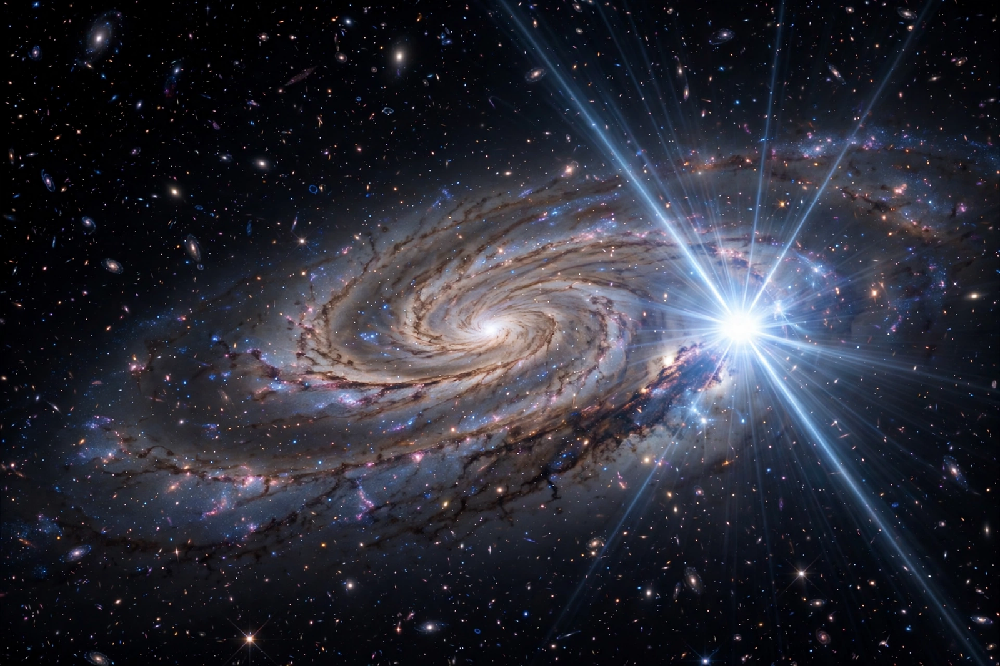

A standard candle is a class of astrophysical object whose intrinsic luminosity (or some property correlated with luminosity) is known well enough that its distance can be computed from its observed brightness, using the inverse-square law. Standard candles are the rungs of the cosmic distance ladder, allowing astronomers to measure distances far beyond the reach of parallax.
Cepheid variables were the first important standard candles: Henrietta Swan Leavitt's period–luminosity relation (1908–1912) showed that a Cepheid's pulsation period predicts its true brightness. Edwin Hubble used Cepheids to show that the Andromeda "nebula" is a separate galaxy and to measure the expansion of the universe.
Type Ia supernovae, the thermonuclear explosions of white dwarf stars, reach nearly uniform peak luminosities and can be "standardized" further using the relation between peak brightness and the rate at which the light curve declines. They are visible across billions of light-years and were used in 1998 to discover the accelerating expansion of the universe.
Other candles include RR Lyrae variables, the tip of the red giant branch (TRGB), surface brightness fluctuations, and the Tully–Fisher relation for spiral galaxies.
The usefulness of a standard candle depends on secure calibration of its zero point. Discrepancies between distances measured with local candles and those inferred from the early universe underlie the Hubble tension. Space telescopes such as Gaia have improved calibration by measuring precise parallaxes to nearby calibrator stars.